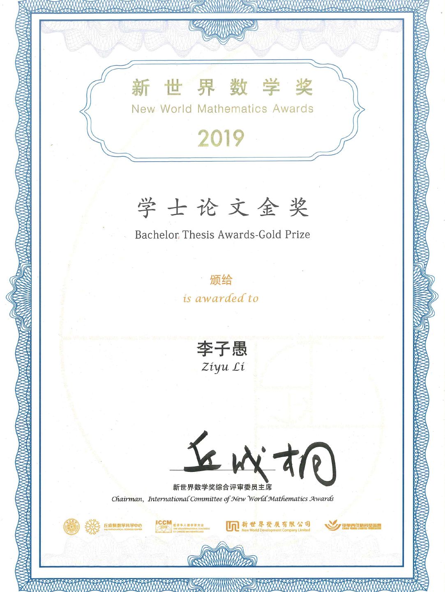
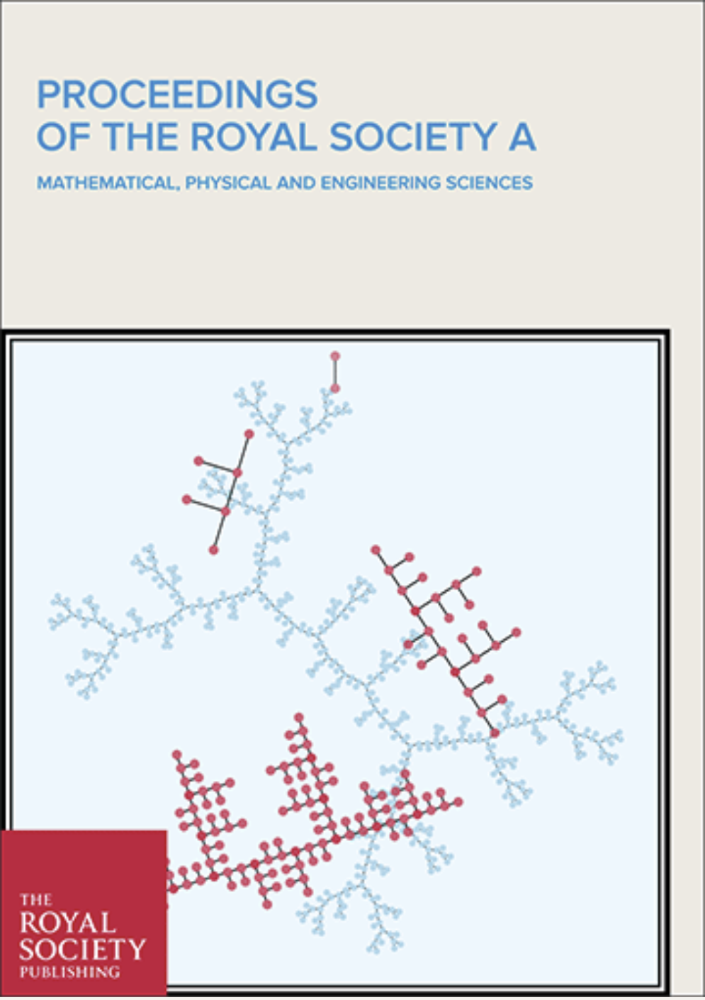
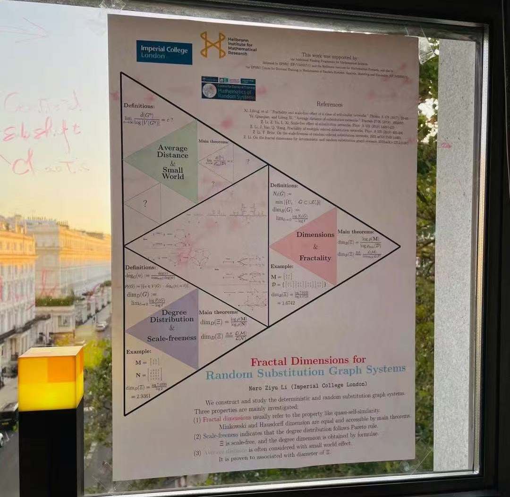
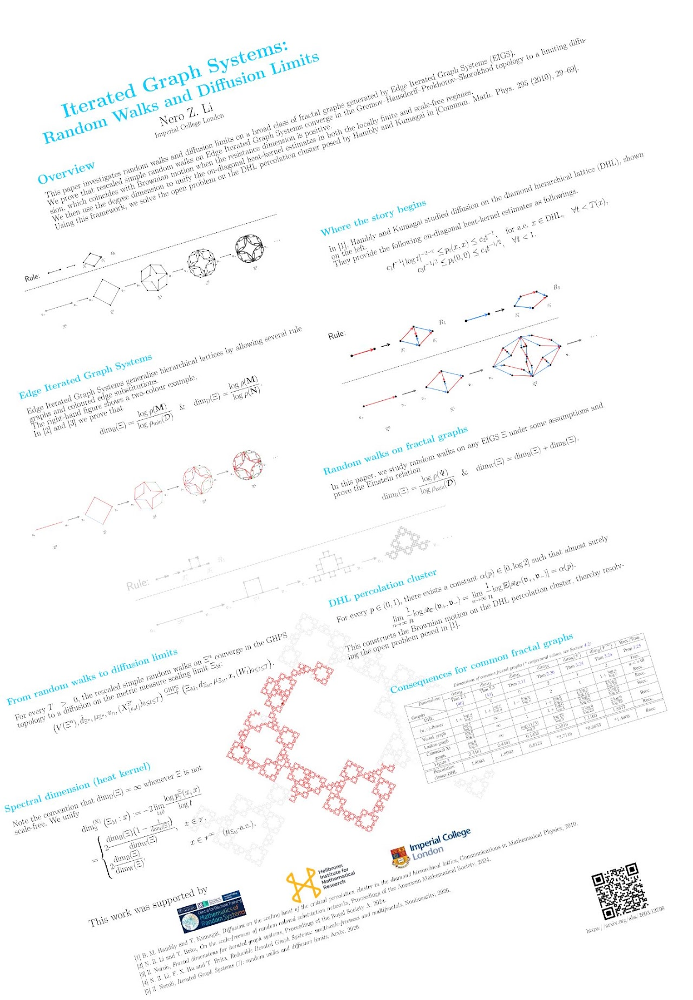
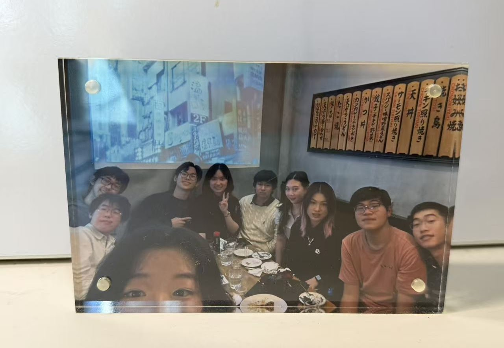
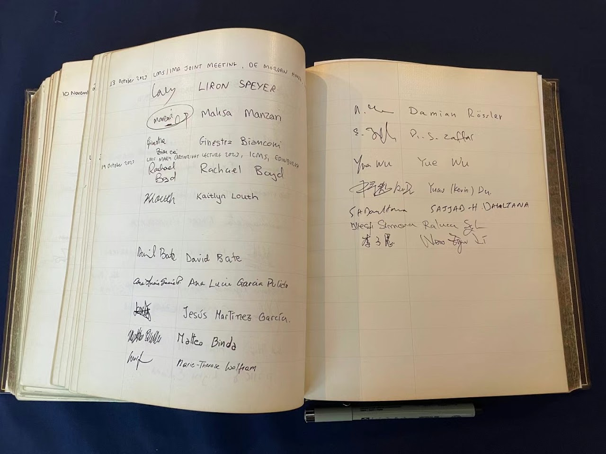

Research
Awards and Funding
2019 New World Mathematics Awards
Gold Medal in the 2017 competition, presented by Fields Medallist Shing-Tung Yau (only two Gold Medals and three Silver Medals were awarded worldwide across the 2017–2019 competitions).2020 Best Speaker
Pure mathematics session, UNSW Annual Postgraduate Conference.2021 Heilbronn Scholarship
PhD funded by the Heilbronn Institute for Mathematical Research (for UK residents) and Imperial College London (international fee difference) (EP/V521917/1).2021 CDT Random Systems
Also funded by the EPSRC Centre for Doctoral Training (CDT) in Mathematics of Random Systems (EP/S023925/1) at the University of Oxford.2023 Unique People’s Choice Winner
Imperial Mathematics Poster Competition.2026 Best Poster Competition
Third Prize, 77th British Mathematical Colloquium, Cardiff University.


Publications
Mathematics
Solutions of x^α+y^α=1 in λ-Cantor sets, submitted, 2026 (36 pages, with Kan Jiang & Lifeng Xi)
The solutions exhibit the Hausdorff phase transition, solving the open question left in [J. London Math. Soc. 113 (2026), e70408].
Iterated Graph Systems (III): Alexander-Orbach conjecture on hierarchical lattices, submitted, 2026 (36 pages)
Outside a narrow region in dimension space, we prove that the Alexander–Orbach conjecture fails on every hierarchical lattice under consideration.
Iterated Graph Systems (II) Bernoulli percolation and universality classes on hierarchical lattices:, submitted, 2026 (45 pages)
No finite family of substitution-multiplicative dimensions completely determines universality, providing a rigorous proof of the failure of dimension-based universality discussed by Hauser and Saxena [Phys. Rev. B 34 (1986), 8193–8195].
Iterated Graph Systems (I): random walks and diffusion limits, submitted, 2026 (50 pages)
Unifies the spectral dimension of EIGS and solves the open problem on DHL percolation cluster posed in [Commun. Math. Phys. (2010) 295, 29–69].
Reducible Iterated Graph Systems: multiscale-freeness and multifractals, Nonlinearity, 2026 (25 pages, with Thomas Britz & Frank Xin Hu)
Completes the fundamental theory of EIGS by investigating the reducible regime.
Cover Image Paper: Fractal dimensions for iterated graph systems, Proceedings of the Royal Society A, 2024, [News report by the Royal Society in Chinese] (28 pages)
Establishes the iterated graph systems.
On the scale-freeness of random colored substitution networks, Proceedings of the American Mathematical Society, 2024 (13 pages, with Thomas Britz)
Defines the degree dimension for graphs.
Physics
Z. Neroli, Moiré Pattern of Rotated Sierpiński Gaskets, submitted, 2026
Introduces the problem of intersections of rotated Sierpiński gaskets (moiré patterns) and derives a formula for their fractal dimensions.
Z. Li, J. Yao, Q. Wang, Fractality of multiple colored substitution networks, Physica A, 2019
Z. Li, Z. Yu, L. Xi, Scale-free effect of substitution networks, Physica A, 2018
Machine Learning
N. Z. Li, X. Zhai, Z. Shi, B. Shi, X. Jiang, Fractal Graph Contrastive Learning, submitted, 2025
Talks
2026 54th Probability Summer School Saint-Flour; Berlin Summer School on Applied Stochastic Analysis, TU Berlin; 77th British Mathematical Colloquium, Cardiff.
2025 Junior Dynamics Seminar, Imperial College London.
2024 Geometry and Fractals under the Midnight Sun, University of Oulu; Heilbronn PhD Student Research Day, Bristol.
2023 Dynamical Systems Seminar, The Open University (1-hour talk).
2022 Mathematics of Random Systems CDT Spring Retreat, Missenden Abbey.
2020 UNSW Annual Postgraduate Conference.
2019 42nd Australasian Conference on Combinatorial Mathematics and Combinatorial Computing, UNSW Sydney.


Conferences, Workshops and Schools Attended
2026 54th Probability Summer School Saint-Flour; Berlin Summer School on Applied Stochastic Analysis, TU Berlin; 77th British Mathematical Colloquium, Cardiff.
2024 Geometry and Fractals under the Midnight Sun, University of Oulu; Heilbronn PhD Student Research Day, Bristol.
2023 Workshop in honour of Peter Baxendale, University of Warwick; CDT Summer School, Kyoto University, Japan; CHAOS Workshop, Nesin Mathematics Village, Turkey.
2022 ICM 2022 Overlay, Imperial College London; Heilbronn Summer Workshop at ICMS, Edinburgh; Durham Symposium; UK-Japan Winter School; Mathematics of Random Systems CDT Spring Retreat, Missenden Abbey.
2020 UNSW Annual Postgraduate Conference.
2019 42nd Australasian Conference on Combinatorial Mathematics and Combinatorial Computing, UNSW Sydney; International Congress of Chinese Mathematicians and NWMA Ceremony (invited).
2017 China Fractal and Dynamical System Academic Conference (invited).
Teaching and Supervision
Imperial College London
2026 Supervision of Master’s thesis related to bounded-noise Hopfield networks.
2023–24 Graduate Teaching Assistant
Autumn: MATH40003 Linear Algebra and Groups.
Spring: MATH40003 Linear Algebra and Groups; MATH50007 Network Science.
Summer: LaTeX workshops.2022–23 Graduate Teaching Assistant
Autumn: MATH50003 Linear Algebra and Numerical Analysis; MATH60008 Dynamical Systems.
Spring: MATH50003 Linear Algebra and Numerical Analysis.

Gift from an undergraduate student.

Academic Activities and Service
Projects Mini-project with BBC News; project with UK Defence.
Peer review Referee for Physica A, Filomat and the Australasian Journal of Combinatorics.
Memberships Life member of the Combinatorial Mathematics Society of Australasia; member of the Australian Mathematical Society and the London Mathematical Society.